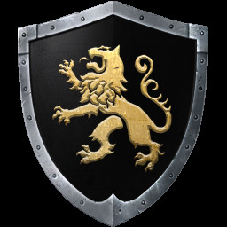
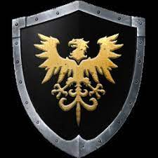
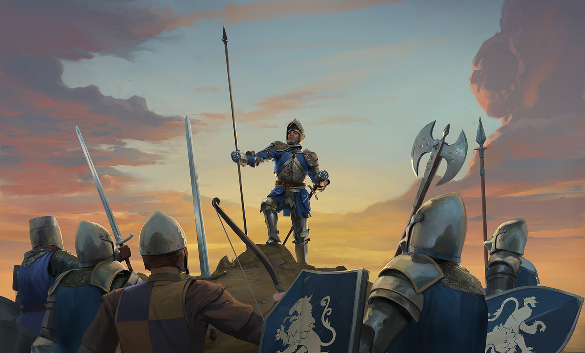
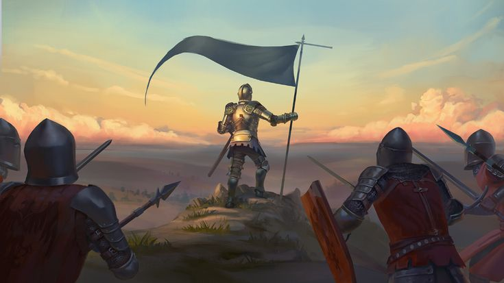

Agatha  Mason Lore
King Argon has won his war and the kingdom of Agatha is finally united... Yet his armies still amass in preparation to invade a foreign land... Most unaware that dissent is brewing in the camp all around them... In the form of an elite, handpicked group already coming to be known as... The Mason Order.
Agatha
The Agatha Knights are one of two major factions. The Knights are the soldiers who are still loyal to Danum Argon, King Alfonso Argon's nephew. They fight Malric and the Mason Order, hoping to keep stability within Agatha, even by being away from home to protect the peace against a supposed distant threat. The Agatha Knights are also known as "loyalists", and are made up of mostly royalty and nobility, people who once owned most of the lands and peasants before civil war, and who are distraught by the war at home's effect on trade and matters of economy
Mason
The Mason Order is a faction led by Malric Terrowin. The Masons seek to annihilate Agatha and to make the people enslaved. After the death of King Alfonso Argon, Malric used the Order to take control of Agatha, due to Argon's unpopularity. They believe that the ends can justify any means and things, often people, must occasionally be sacrificed for the greater good. The Mason Order brings oppression, repression, ruthlessness, despotism, destruction, tyranny, brutality, injustice, greed, and power to unleash death as they do not hesitate to vanquish any who oppose them.